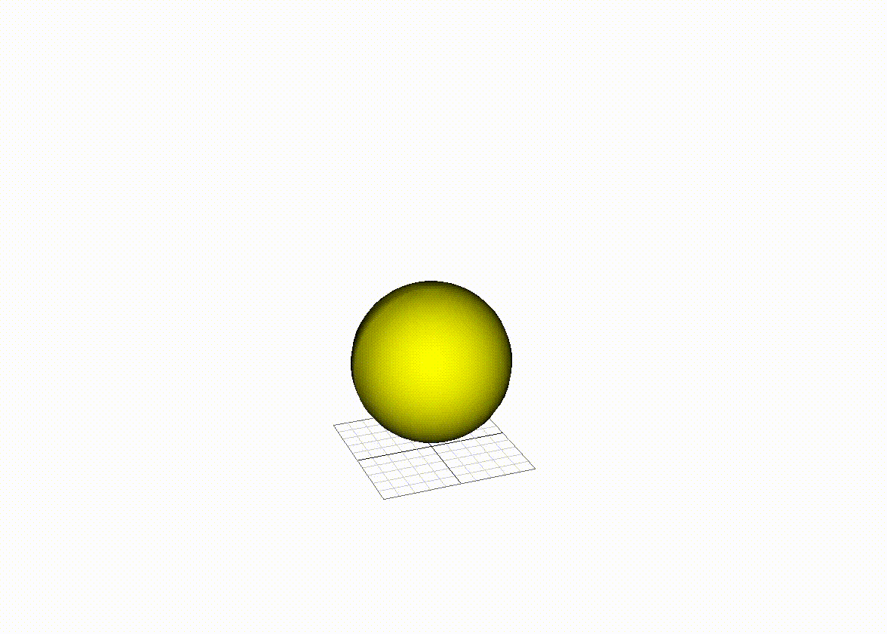
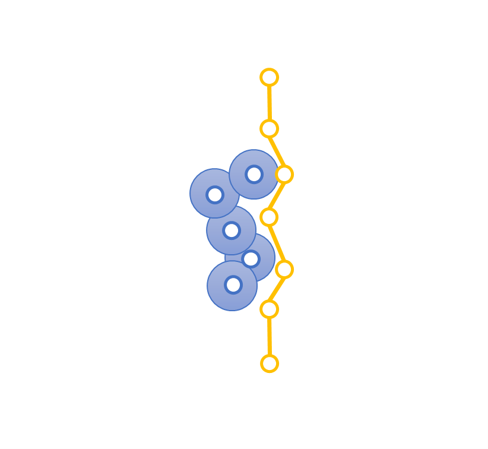
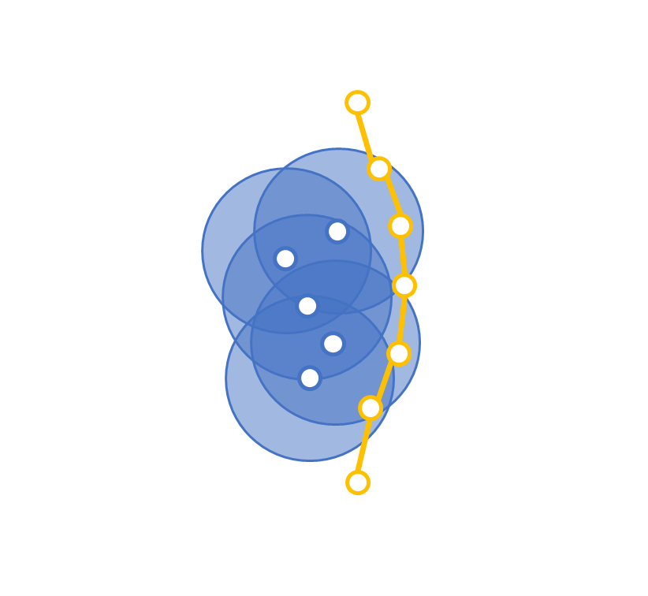
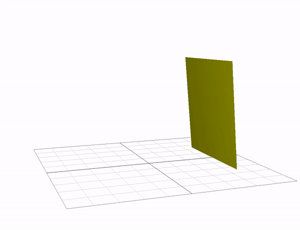
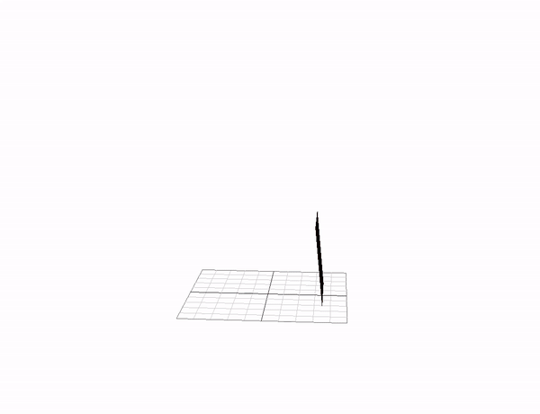
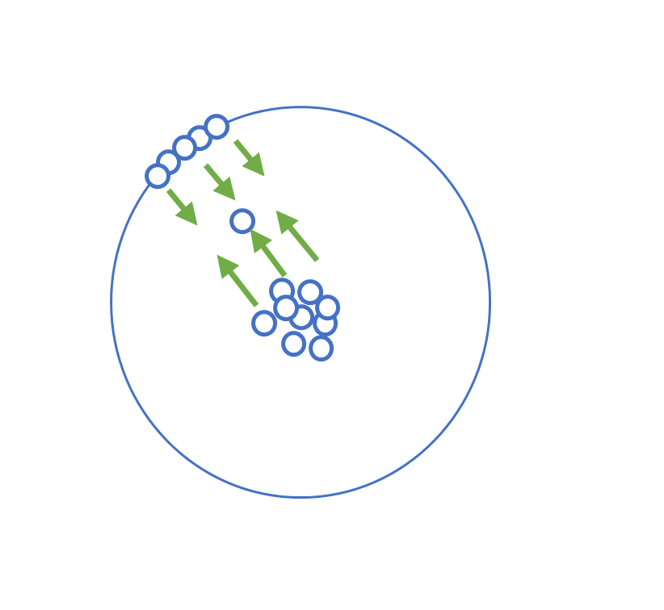
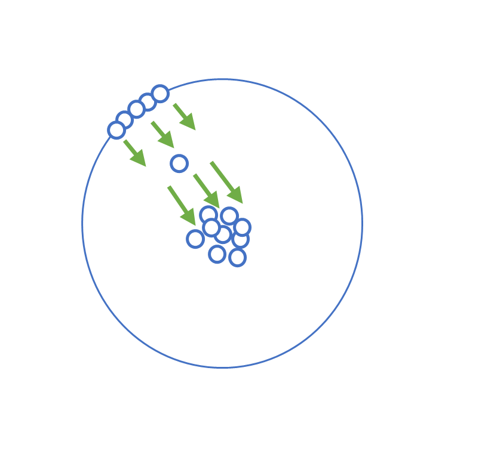
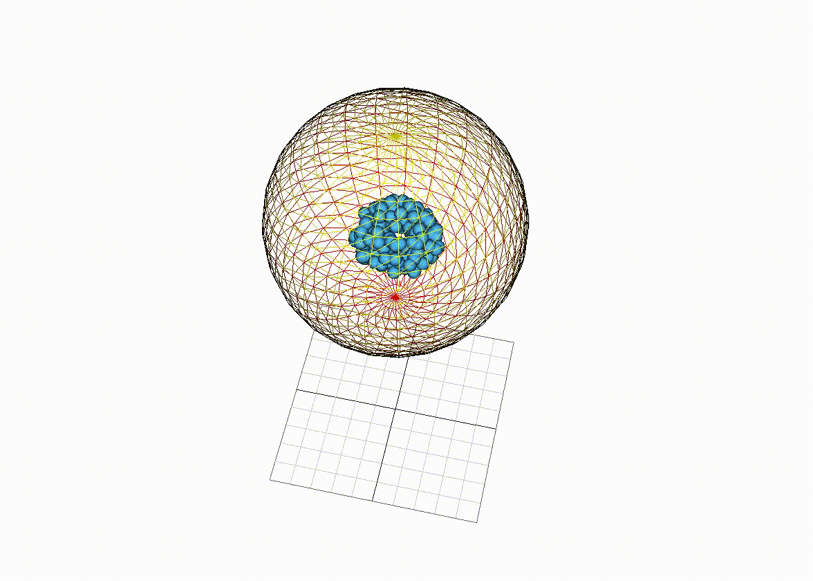

Physically Based Simulation For Soft Objects
Ziyan Xiong
Cloth Simulation
My cloth simulation code is based on the code in Assignment 5 in CSCE 489: Computer Animation taught by Professor Sueda.
Fluid Simulation

My fluid simulation is based on the paper by Clavet et al. (2005).
Modifications to cloth and fluid simulation
- Large radius, Small collision coefficients
- Environmental fluid particles
- Separate rest density
Radius and collision coefficients

Small radius, Large collision coefficients

Large radius, Small collision coefficients

Small radius, Large collision coefficients

Large radius, Small collision coefficients
Cloth pushed by fluid particles

Environmental fluid particles

Separate rest density

Same rest density

Different rest density
Separate rest density
RESULTS
Future work
- Automatically connect vertices with springs
- Optimize for neighborhood particles searching
- Separate the time step for cloth and fluid simulation
- Complex models